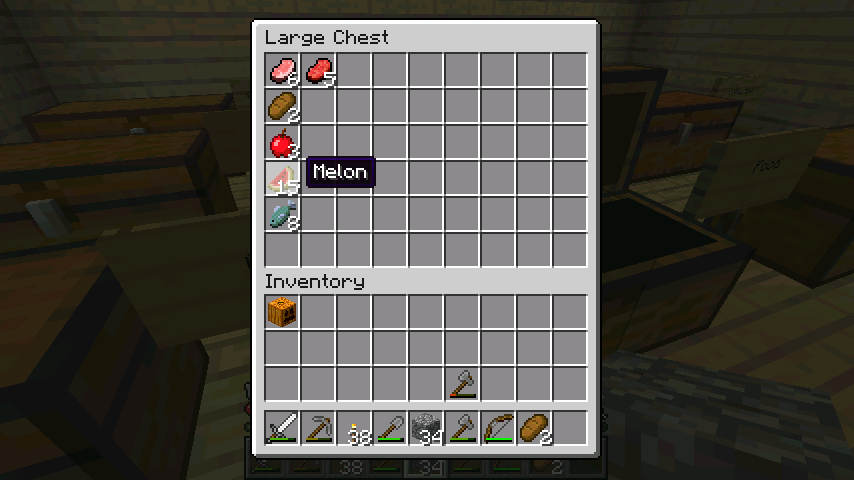

首页
上一页
9
10
11
12
13
14
14
15
16
17
18
19
下一页
末页
defanive2
无尽黑夜
14
种上西瓜苗，金坷垃催熟 = =
有了骷髅刷怪塔之后，都没刷多少次，骨头就有3组了
顺便把南瓜也收了吧
524楼
2012-08-07 01:45
defanive2
无尽黑夜
14
晒一下矿物储备，挺足的，哈哈
相对于我这么匮乏的挖矿时间来说，很不错了
尤其是钻石，66个，基本上都不需要再去挖矿了
525楼
2012-08-07 01:46
defanive2
无尽黑夜
14
木料及木制品储备，也很充足
当然废弃矿洞还有好多木板都没清理，清理完就更多了
不需要担心木材和矿物了
食物的话，最好的西瓜也有了
感觉生活很小康
526楼
2012-08-07 01:48
defanive2
无尽黑夜
14
农作物储备
跟村民的几次交易之后，储备就没有这么多了
甘蔗原来是有两排的组，后来全部交易换了30+个绿宝石
至于小麦，一部分用来交易了，一部分用来繁殖动物，一部分做食物
自然小麦储备就不多了（更何况小麦生长周期这么长）
527楼
2012-08-07 01:50
defanive2
无尽黑夜
14
鹅卵石这些杂物倒是有一堆。。
528楼
2012-08-07 01:51
defanive2
无尽黑夜
14
这些也是杂物，泥土，沙砾什么的
沙子有很多，玻璃也不需要担心（旁边就是沙漠，担心毛）
moss stone也有不少，发现了2个地牢得来的，虽然只能做装饰
529楼
2012-08-07 01:53
defanive2
无尽黑夜
14
这些是怪物的掉落储备
僵尸肉是从经验塔里面得到的
蜘蛛丝则是主要从矿洞里面得到的
骨头也是从经验塔
黑火药是经常有事没事就单挑苦力怕
泪珠是和ghast的一次近身战用剑撸出来的（很激烈的一次，之前直播有图片）
史莱姆则是意外发现的一直小史莱姆
现在打算有时间就把史莱姆chunk给挖了，刷史莱姆球
530楼
2012-08-07 01:57
defanive2
无尽黑夜
14
工具储备，虽然算不上是储备
比较重要的东西是，那把FortuneIII+UnbreakingIII的钻石附魔稿
其他都是小意思
至于3组的箭，都是从骷髅刷怪笼里面得到的
可见发现一个骷髅地牢对这个游戏的重要性。。
531楼
2012-08-07 01:59
defanive2
无尽黑夜
14
工具储备，虽然算不上是储备
比较重要的东西是，那把FortuneIII+UnbreakingIII的钻石附魔稿
其他都是小意思
至于3组的箭，都是从骷髅刷怪笼里面得到的
可见发现一个骷髅地牢对这个游戏的重要性。。
535楼
2012-08-07 02:01
defanive2
无尽黑夜
14
造一把钻石剑附魔
536楼
2012-08-07 02:02
defanive2
无尽黑夜
14
LV30，期待有好结果
PS 造钻石剑附魔不心疼么，心疼毛，反正还有一组
附魔出来结果差了就随身带着用就是了
537楼
2012-08-07 02:03
defanive2
无尽黑夜
14
锋利4，实话并不算差，算是攻击力很强的武器了
538楼
2012-08-07 02:04
defanive2
无尽黑夜
14
出来想找只怪物磨剑都找不到。。
前方是湖根本不刷怪
而周围的开阔平地大部分怪都被烧死了
苦力怕你是跑去哪里了。。
539楼
2012-08-07 02:07
defanive2
无尽黑夜
14
好吧，今晚奥运没东西看，临睡前测试一下1级附魔武器可以得到什么
当然是在创造里面测试，附魔一下剑和弓
540楼
2012-08-07 02:08
defanive2
无尽黑夜
14
话说突然发现西瓜可以收了
541楼
2012-08-07 02:10
defanive2
无尽黑夜
14
收获15片西瓜，放到食物箱里
PS 食物储存比较少，基本就是有需要就合成个面包吃
因为小麦说不定需要绿宝石了可以拿去跟村民换
现在有西瓜了就不需要担心了

542楼
2012-08-07 02:11
defanive2
无尽黑夜
14
附魔出来的结果是，石剑是锋利1，弓是力量1
而铁剑的话，smite，锋利，节肢杀手，击退四种都有，都是1级
总体来说花这1级来附魔武器意义不大，弓可以考虑
543楼
2012-08-07 02:17
defanive2
无尽黑夜
14
好了准备睡觉了，今晚奥运没看点
明天打MC的短期目标是，找到史莱姆chunk并且开始收集史莱姆球
粘性活塞对于很多设计都是关键啊
其实急需粘性活塞的另外一个原因是想开始建地铁站了
而我的地铁站设计一个地铁站需要有6个粘性活塞（其实都是出于美观需要）
铁轨的话没什么鸭梨，有废弃矿洞已经挖了快2组的铁轨了，目测还可以挖几组
地铁站目前打算是，家一个站，骷髅塔一个站，村庄一个站
544楼
2012-08-07 02:27
defanive2
无尽黑夜
14
今天停电悲剧...等来电了才能继续玩。想看刘翔啊赶快来电吧
549楼
2012-08-07 16:02
defanive2
无尽黑夜
14
可惜史冬鹏没能进决赛,,,
551楼
2012-08-07 17:27
defanive2
无尽黑夜
14
可惜史冬鹏没能进决赛,,,
552楼
2012-08-07 17:27
defanive2
无尽黑夜
14
今天又看到有帖子在争论生存和建筑哪种玩法高端。其实我的感觉是,两种玩法都是很好的,各自都有技巧性。生存更专注对环境的利用和改造,而建筑则是美观的设计和建造。两种都没有拙劣之分。可能这也是mc的一个优点吧
553楼
2012-08-07 17:33
defanive2
无尽黑夜
14
这里停电一直停到现在,没办法更了
558楼
2012-08-07 21:48
defanive2
无尽黑夜
14
好了，终于恢复供电了我艹。。
继续打MC，今天短期目标是，开好史莱姆chunk，开始刷史莱姆球
由于需求不大，就不做自动杀怪和收集装置了
史莱姆球是MC原版里面比较难获得的物资之一
PS 如果借助第三方程序例如slime finder之类的就很简单了，而且效率也高
我个人的感觉是，既然玩原版就不要借助任何外部工具来玩，也不装有助于游戏的mod
某些难物资的收集也正是MC生存里面的挑战
561楼
2012-08-07 23:17
defanive2
无尽黑夜
14
开打MC
562楼
2012-08-07 23:20
defanive2
无尽黑夜
14
找到了史莱姆截图的时候的坐标，是(x,z)=(-456,372)
经过简单的计算可以算出，chunk的范围就是(x1,z1,x2,z2)=(-464,368,-448,384)
到y=11把这个chunk给挖空了就可以了，插上火把
PS 史莱姆只会生成在特定chunk里面，根据种子而定
生成亮度必须足够，而且有足够高度（对于大史莱姆需要3格高的空间）
而且只在y=40以下生成
563楼
2012-08-07 23:26
defanive2
无尽黑夜
14
由于没有附魔等级了，先轻装上阵
带上PowerI的弓和38个箭，先去把chunk给定位了
有了骷髅刷怪笼就是好啊，箭也不愁了
PS 貌似忘记带楼梯了，回家造楼梯
564楼
2012-08-07 23:29
defanive2
无尽黑夜
14
粗算了一下，废弃矿道是在y=30，下挖到y=11
21个楼梯应该够了
565楼
2012-08-07 23:33
defanive2
无尽黑夜
14
突然觉得，反正这个钻石稿也没什么用，效率4
刚好用来挖这个无聊的chunk算了
566楼
2012-08-07 23:35
defanive2
无尽黑夜
14
下挖的时候发现了一个地下湖
不过没什么意思，封住继续下挖
PS 网速又进入了缓慢状态
看来一天停电之后大家都开始下种了我擦
569楼
2012-08-07 23:50
首页
上一页
9
10
11
12
13
14
14
15
16
17
18
19
下一页
末页